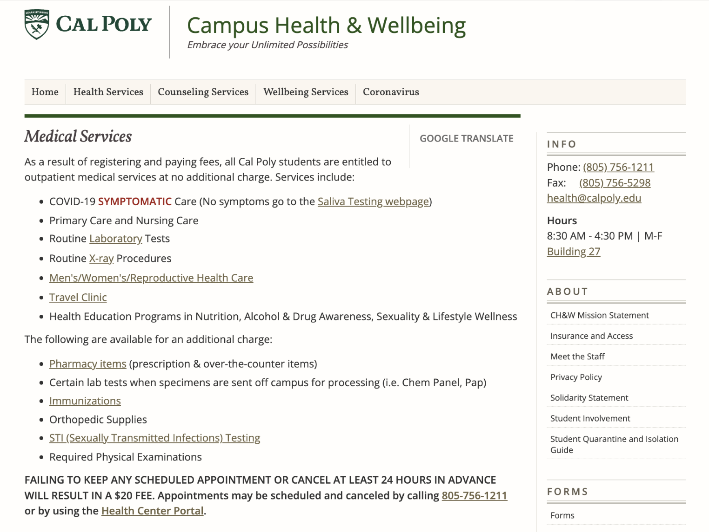
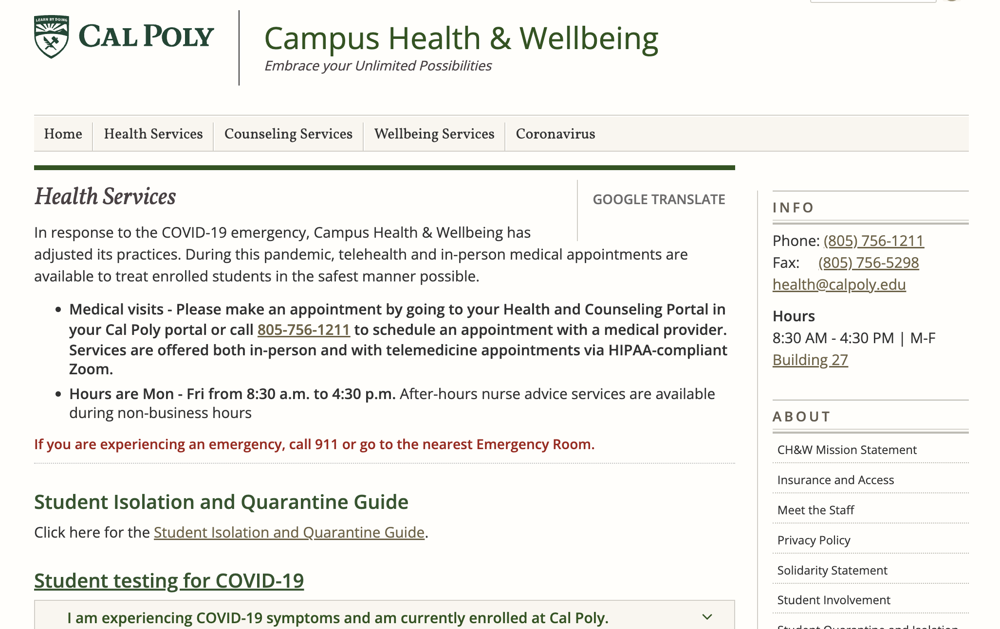
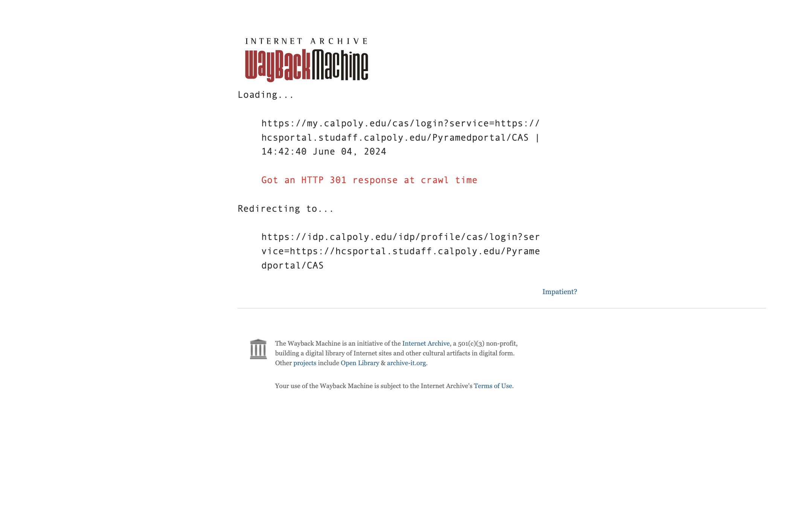
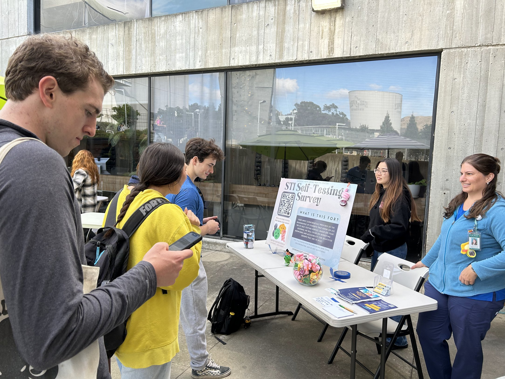

Cal Poly · UX Lead · Sept 2023–Dec 2025
Rebuilt a health portal students trusted
690% more engaged sessions. 60% less drop-off. A platform 23,000 students finally relied on.
Context
I was Cal Poly's first dedicated UX designer, brought in to help improve a health portal students had quietly stopped trusting.
Despite serving a student population of 23,000, the portal was averaging fewer than one engagement per student annually — a sign that students weren’t seeing it as a reliable place to start.
User & Org Problem
Students didn't trust the site, so they avoided it entirely.
Solution
Rebuilt trust through clarity.
A redesign focused on rebuilding credibility.
I audited the existing site, identified the specific points of failure, and systematically rebuilt the IA, visual hierarchy, and content structure from inside a deeply constrained CMS.
Identifying Pain Points
Before making design changes, I went through every page to understand where trust was breaking down.
Dead links, redundant content, and buried actions kept showing up. The issues fell into three main buckets:

- Walls of text on every page
- No clear entry points
- Students scanned and left

- Forms linked to 404s
- Outdated hours and info
- Trust broke on the first click

- Booking was 4+ clicks deep
- Duplicate navigation paths
- No obvious next step
I cross-referenced the audit against Google Analytics including session data, drop-off rates, and page-level behavior — to check whether the issues I saw in the UI also showed up in the numbers.

I also went off-screen through in-person booths and surveys with Pulse, a student-run organization, to better understand how students navigated sensitive resources like STI testing and sexual health information.
Constraints
Modern UX inside a 2011 CMS #drupal7
Drupal 7 was limiting, so the work became about improving the existing system within its constraints — using Figma to design consistent layouts and pairing visuals with proper alt text for WCAG compliance.
Designed and maintained everything in Figma first to keep visual consistency the CMS couldn't enforce on its own.
Implemented directly in Drupal with proper alt text to maintain SEO without relying on modern tooling.
Key tradeoff: I designed with desktop responsiveness but not mobile — 82% of users were on desktop, so mobile was deprioritized by data, not by default.
Design System
How to build trust
Started with IA. Before screens, I mapped the full site — what existed, what was duplicated, what was missing. The biggest shift: department-based → task-based.
From there, I defined reusable modules, a consistent type scale, and color tokens to help the site feel more cohesive across pages.
Putting It Together
Designing the pages
Three principles guided every page: make actions obvious, keep content scannable, make the site feel human enough to trust.
Some stakeholders pushed for denser pages — "the information feels important." Analytics showed the opposite: dense pages had the highest drop-off. I used session data and prototypes to move the conversation from opinion to outcomes.
- One clear action per page
- Critical info above the fold
- Solves: students scanning and leaving
- Task-based over dept-based
- Flatter, fewer dead ends
- Solves: buried actions & duplicates
- Warmer, direct language
- Accurate, maintained info
- Solves: students not believing what they read
Results
The site started acting like a real source of truth.
In year one, engaged sessions grew from 13,003 to 102,652. By year three, they'd passed 200,000. It wasn't a spike — it kept compounding.
Learnings